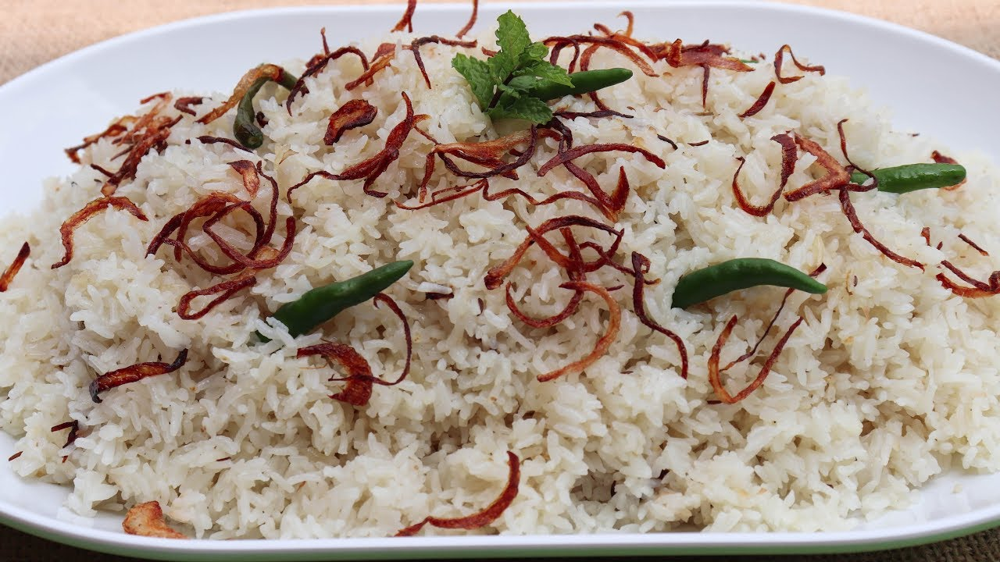

PERFECT PAIRING
Plain Pulao (Sada Polao)
Prep Time10 Minutes

Cook Time25 Minutes
Ingredients
- Aromatic Rice: 2 cups (Chinigura or Kalijira preferred)
- Oil: 3 tbsp
- Ghee: 1 tbsp
- Onions: 2 medium, thinly sliced
- Ginger Paste: 1 tsp
- Garlic Paste: 1 tsp
- Whole Spices: 2 cardamoms, 2 cinnamon sticks, 3 cloves, 2 bay leaves
- Salt: 1 tsp (or to taste)
- Liquid: 3 cups hot water + 1 cup liquid milk or Coconut Milk
- Fried Onion
Steps to Cook
- Prepare the Rice: Wash thoroughly and drain at least 30 minutes.
- Sauté Whole Spices: Heat oil and ghee. Add cardamom, cinnamon, cloves, bay leaves.
- Soften Onions: Fry until soft and translucent. Do not brown.
- Fry the Rice: Add drained rice and sauté. Stir constantly to keep grains separate.
- Add Aromatics: Add ginger paste, garlic paste, and salt. Continue sautéing until rice feels light.
- Add Liquids: Pour 3 cups hot water and 1 cup milk.
- Simmer: Bring to boil. When water level drops, reduce heat.
- Steam (Dum): Cover tightly and steam on low for 10 minutes.
- Final Rest: Turn off heat. Fluff gently, add Fried Onion and rest 5 minutes before serving.